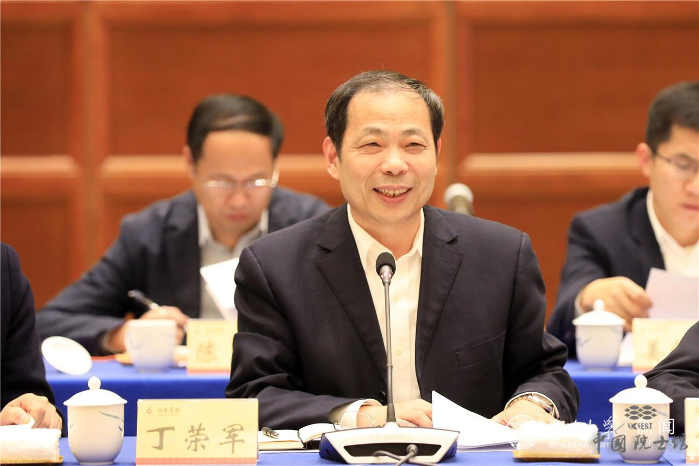

丁荣军院士 (1961 - )
“科技创新是推动轨道交通事业发展的核心动力。”
相关图片展示
复兴号电力机车

丁荣军院士
丁荣军 - 中国轨道交通牵引动力技术领军人物
丁荣军（1961 年 - ），湖南攸县人，中国工程院院士，长期致力于轨道交通牵引动力技术领域的研究与创新，是中国轨道交通领域的杰出科学家。
教育背景
丁荣军 1984 年毕业于西南交通大学电力机车专业，之后投身于轨道交通科研工作，开启了他辉煌的科研征程。
职业经历
丁荣军毕业后就职于中国中车株洲电力机车研究所有限公司，从基层技术岗位做起，历任工程师、高级工程师、总工程师等职，现任该所首席专家等职务。在他的职业生涯中，始终坚守在轨道交通技术创新的前沿阵地。
主要成就
大功率交流传动系统研发
丁荣军主持研发的大功率交流传动系统，打破了国外技术封锁，实现了我国轨道交通牵引动力技术的重大突破，使我国电力机车和高速动车组的性能得到显著提升。
“复兴号”关键技术攻关
作为核心专家，他带领团队在“复兴号”高速列车的牵引、制动、网络控制等关键技术领域取得一系列创新成果，为“复兴号”的成功研制和运营提供了坚实的技术支撑。
历史影响与贡献
推动轨道交通技术国际化
丁荣军积极推动我国轨道交通技术的国际化发展，带领团队参与国际标准制定，提升了我国在该领域的国际话语权，让中国轨道交通技术走向世界舞台。
引领行业技术进步
他的科研成果广泛应用于我国铁路干线、城市轨道交通等多个领域，引领了行业技术进步，为我国轨道交通事业的快速发展做出了不可磨灭的贡献。
荣誉与纪念
- 2015 年当选中国工程院院士，2016 年获国家科技进步一等奖，2019 年获何梁何利基金科学与技术进步奖。
- 中国中车株洲电力机车研究所有限公司设立“丁荣军创新工作室”，激励广大科研人员传承创新精神，推动行业持续发展。